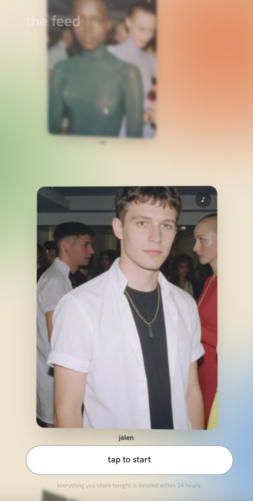
Summary: The home screen serves as the attract loop for the kiosk experience. It displays a scrolling feed of existing participant cards and a California map visualization with county-level HIV/PrEP data. The screen runs continuously between user sessions.
User Action: Taps "tap to start" to begin. No data is collected on this frame.
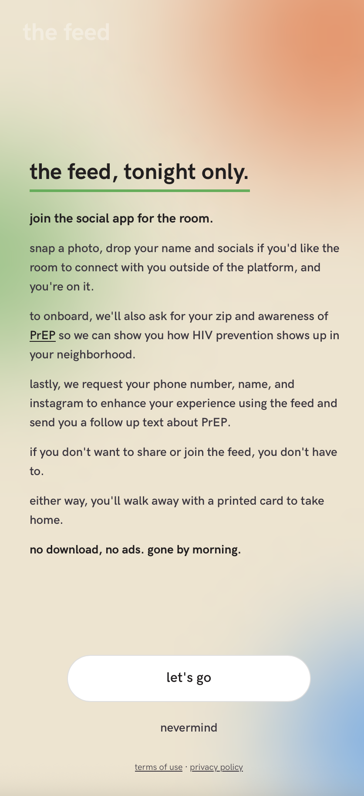
Summary: Introduces the kiosk experience and sets expectations for the interactive journey ahead. Presents Terms of Use and Privacy Policy links before the user proceeds, ensuring informed consent is established at the outset.
User Action: Reads the introductory copy and taps "let's go" to continue, or "just browse the feed" to skip onboarding. Terms of Use and Privacy Policy links are accessible on this screen.
Why this language is here: The Terms of Use and Privacy Policy links are surfaced before any data collection begins. This ensures that users have an opportunity to review applicable terms before opting into the experience.
Concerns this addresses:
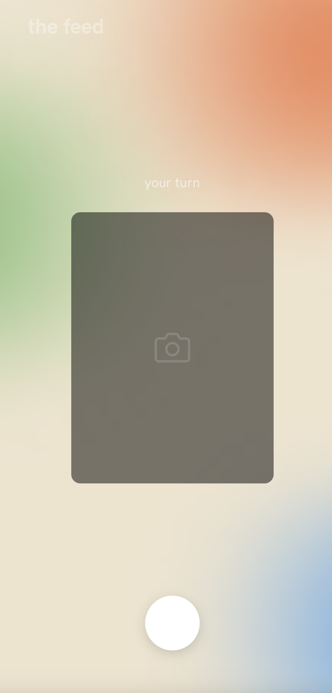
Summary: Captures a photo of the user via the kiosk camera. The photo is used to generate a personalized identity card later in the experience. The photo is processed locally and is not transmitted to any external server.
User Action: Positions themselves in front of the kiosk camera and taps the shutter button. The live camera feed is displayed so the user can frame their photo. If in group mode, a counter shows "X of Y" for the current member.
Summary: Allows the user to review their captured photo and either confirm or retake it. This gives the user agency over their image before it is incorporated into their identity card.
User Action: Reviews the captured photo. Taps "looks good" to confirm, or "retake" to return to the camera screen.
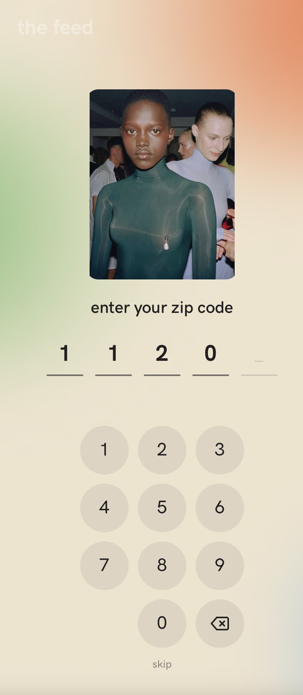
Summary: Collects the user's zip code to determine which county-level HIV and PrEP data to display in subsequent data frames. The zip code is mapped to a county using a static lookup table (no geolocation services). The zip code is not stored after the session ends.
User Action: Enters their 5-digit zip code via the on-screen numpad. Auto-advances after 5 digits are entered. Can skip.
Exact copy on screen: "enter your zip code"
Why this language is here: Zip code is the minimum geographic identifier needed to retrieve county-level public health data from AIDSVu. The input is mapped to a county via a static ZIP-to-county lookup and is not stored, transmitted, or combined with other identifiers. No geolocation services are used.
Concerns this addresses:
Legal basis: General data minimization principles. HIPAA not triggered (Gilead not a covered entity for this event per Jared's 4/14 assessment).
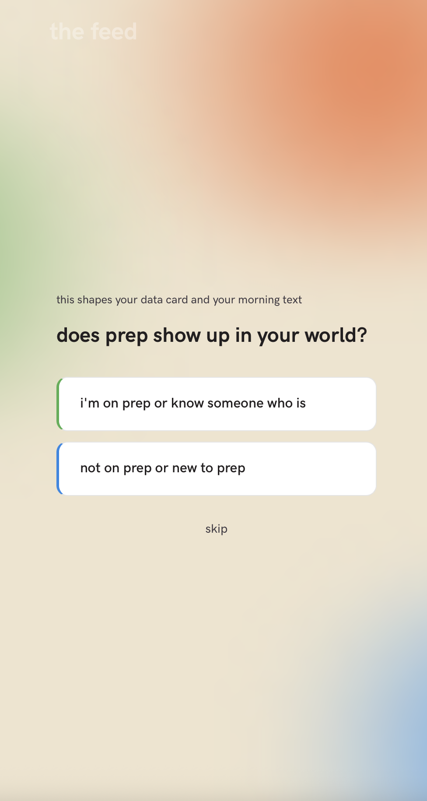
Summary: Asks the user about their relationship to PrEP using de-identified language to shape the narrative experience on subsequent frames. The question uses a two-pathway structure that does not require the user to disclose personal health status.
User Action: Selects one of two pathways or skips the question entirely. Skip preserves user autonomy without penalty.
Why this language is here: Two-pathway question structure collapses an earlier four-option design to de-identify users as patients. Phrasing includes "know someone who is" so selecting the option does not imply the user personally is on PrEP. Skip option preserves user autonomy without penalty.
Stakeholder guidance that shaped this:
Concerns this addresses:
Legal basis: State HIV confidentiality statutes (jurisdiction-dependent). HIPAA not triggered per Jared's 4/14 assessment (Gilead not a covered entity for this event). TCPA not applicable to this screen.
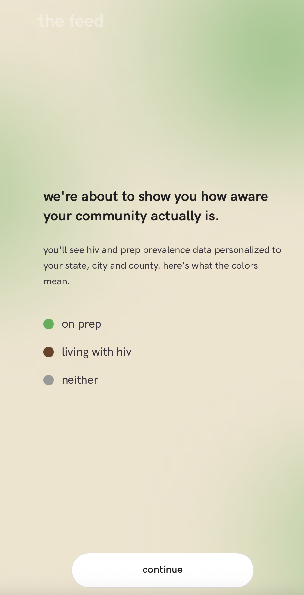
Summary: Introduces the data visualization section and explains the color coding used throughout the subsequent data frames. Prepares the user for the visual language they will encounter, establishing that dots represent relative rates rather than individual people.
User Action: Reads the introductory explanation and color key. Taps "continue" after all three key items animate in.
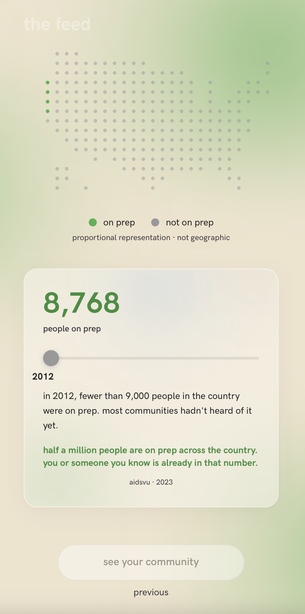
Summary: Displays the growth of PrEP coverage nationally from 2012 to 2023 using an interactive timeline slider. The "connected" variant is shown to users who indicated a relationship to PrEP and uses affirming narrative language.
User Action: Drags the timeline slider from 2012 to 2023. Reads the contextual sentences that update as the slider moves. Taps "see your community" to continue.
Connected variant: Shows affirming language acknowledging the user's relationship to PrEP and the broader community impact.
Rationale: Tailored narrative creates a more relevant experience. Users who selected "connected" receive language that validates their awareness while presenting national trend data. No clinical claims are made.
250-dot proportional visualization on a US map shape. Dot distribution represents relative rates across a timeline. Not geographic placement. Timeline slider animates from 2012 to 2023 end-state. Dot colors shift proportionally to represent changing rates over time.
Why this visual treatment: Animation draws attention to the trend direction without requiring the user to interpret charts or graphs. Dot-based display avoids precision claims.
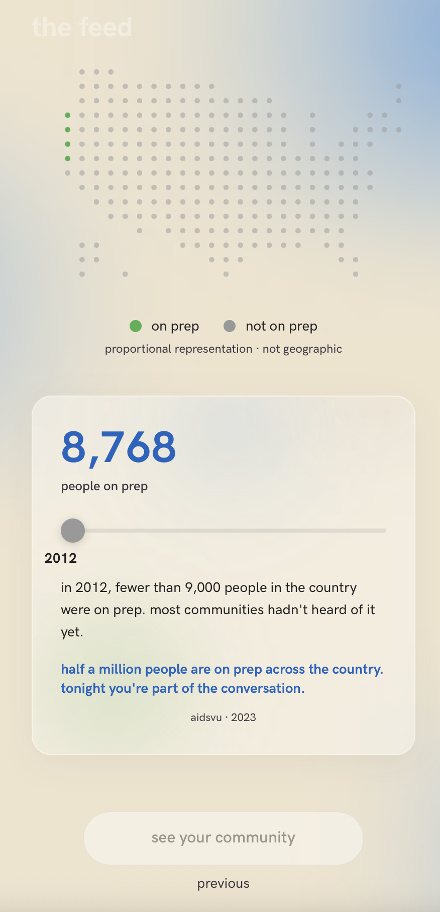
Summary: Displays the same national HIV diagnosis timeline (2012 to 2023) as the connected variant, but uses introductory narrative language appropriate for users who are new to PrEP or who skipped the PrEP question.
User Action: Drags the timeline slider from 2012 to 2023. Reads the contextual sentences. Taps "see your community" to continue.
New/Skipped variant: Uses introductory, non-presumptive language. Does not assume the user has prior knowledge of PrEP or HIV data.
Rationale: Users who selected "new to prep" or who skipped the question receive language that introduces data without assuming familiarity. No clinical claims are made. Same underlying data as the connected variant.
250-dot proportional visualization on a US map shape. Dot distribution represents relative rates across a timeline. Not geographic placement. Identical visual treatment to connected variant.
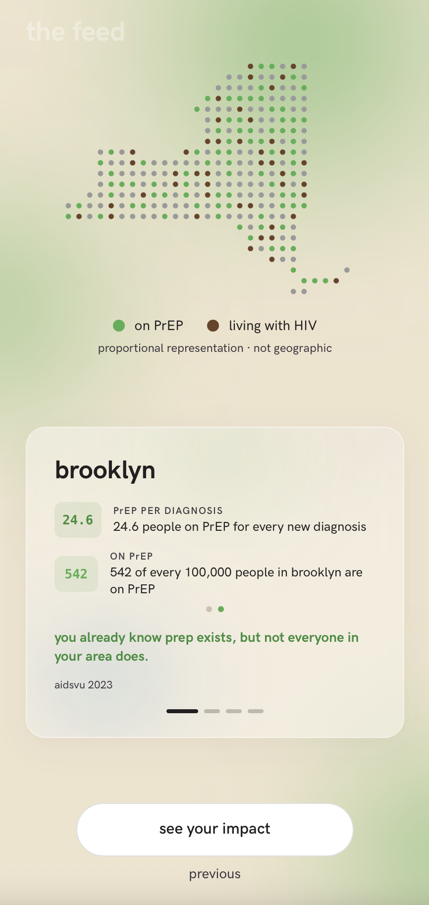
Summary: Displays PrEP coverage and HIV prevalence for Brooklyn (Kings County) on the same state map dot visualization. The connected variant uses narrative language appropriate for users with an existing relationship to PrEP. Borough data contextualizes the national trend shown in the previous frame.
User Action: Views the state map and reads the borough data card. Swipes to next borough. Taps "see your impact" to continue.
250-dot proportional visualization on a state map shape. Dot colors shift per borough to represent relative prep/hiv ratios. Swipeable data cards below with GapRing and StatRow components. Not geographic placement of individuals.
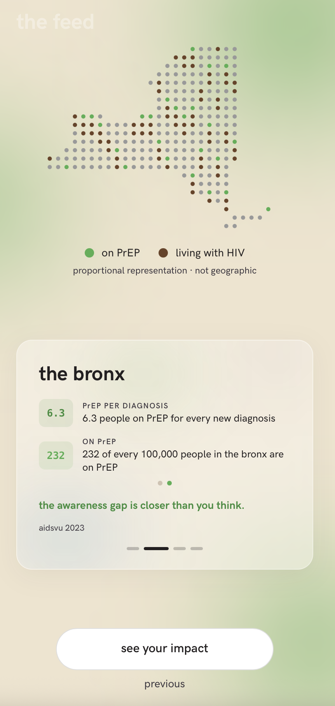
Summary: Displays PrEP coverage and HIV prevalence for The Bronx on the same state map dot visualization. The connected variant uses narrative language appropriate for users with an existing relationship to PrEP.
User Action: Views the borough data card. Swipes to next borough or back.
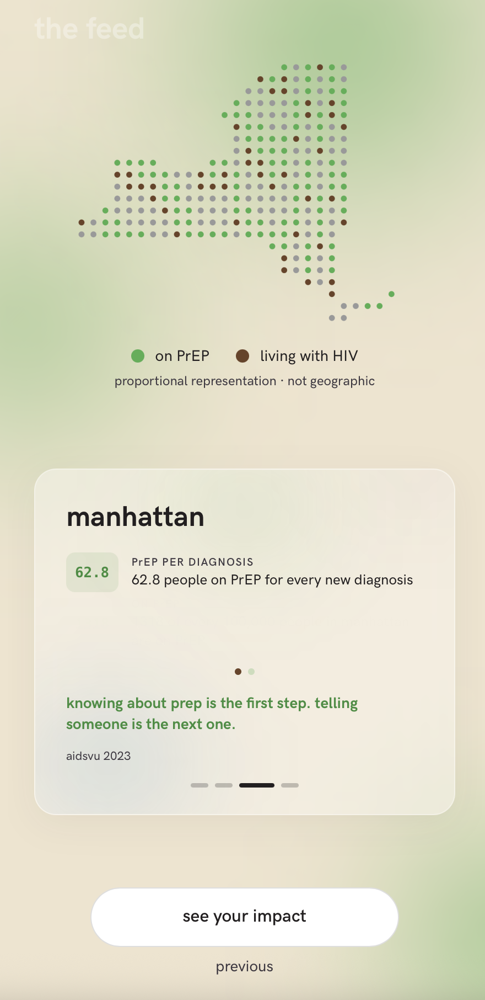
Summary: Displays PrEP coverage and HIV prevalence for Manhattan (New York County) with a state map dot visualization. The connected variant uses affirming narrative language for users with an existing relationship to PrEP.
User Action: Views the borough data card. Swipes to next borough or back.
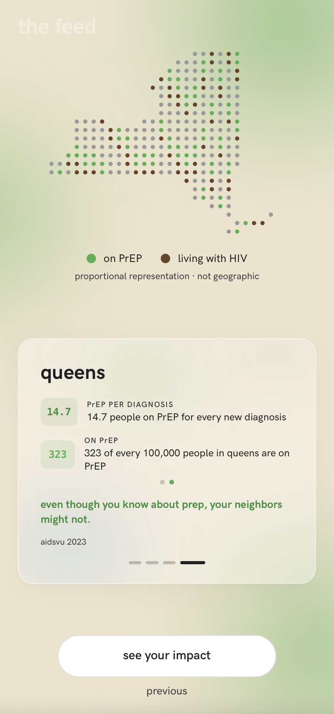
Summary: Displays PrEP coverage and HIV prevalence for Queens (Queens County) with a state map dot visualization. The connected variant uses affirming narrative language for users with an existing relationship to PrEP.
User Action: Views the borough data card. Swipes back to previous boroughs.
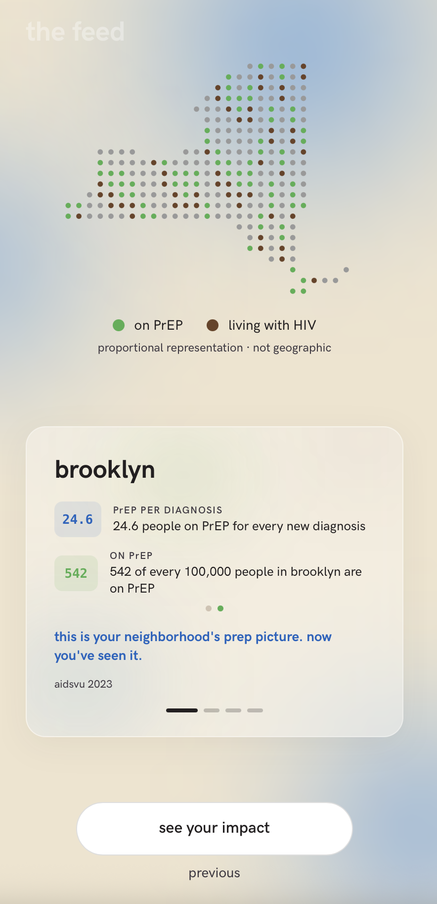
Summary: Displays PrEP coverage and HIV prevalence for Brooklyn (Kings County) on the same state map dot visualization. The new/skipped variant uses introductory, non-presumptive narrative language appropriate for users who are new to PrEP or who skipped the PrEP question.
User Action: Views the borough data card. Swipes to next borough. Same data as connected variant.
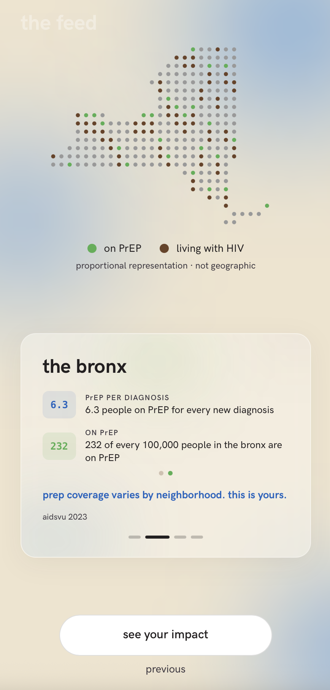
Summary: Displays PrEP coverage and HIV prevalence for The Bronx on the same state map dot visualization. The new/skipped variant uses introductory language appropriate for users who are new to PrEP or who skipped the PrEP question.
User Action: Views the borough data card. Swipes to next borough or back.
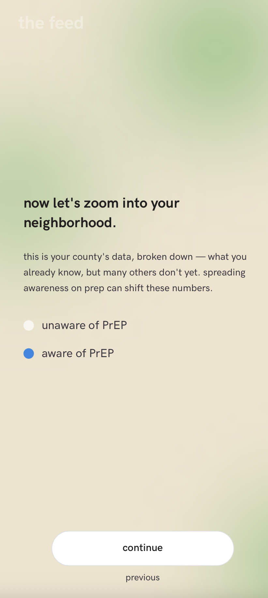
Summary: Transitions the user from the geographic data sequence (national and borough) into the identity card carousel. Sets context for the upcoming county-level data breakdown cards. Introduces the "unaware/aware" color key that will be used in the drag interaction. Prepares the user to explore their community's data across multiple dimensions (overall, race, age, gender).
User Action: Reads the transition copy and taps "continue" into the identity card carousel.
Connected variant: "this is your county's data, broken down -- what you already know, but many others don't yet. spreading awareness on prep can shift these numbers."
New/Skipped variant: "this is your county's data, broken down. now you've seen it. spreading awareness of prep shifts these numbers, one conversation at a time."
Rationale: The transition copy sets the emotional tone for the card carousel. Connected users receive affirming language; new/skipped users receive contextualizing language. No clinical claims in either variant.
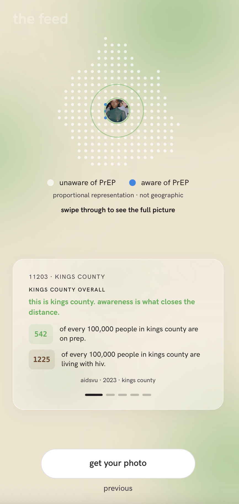
Summary: First card in the five-card identity carousel. Displays the overall PrEP coverage and HIV prevalence rates for the user's county. A persistent drag map is rendered above the card showing the county shape with dots. The user's photo appears as a draggable element on the map. Progress indicator shows 1 of 5.
User Action: Reads the overall county data. Swipes to the next card.
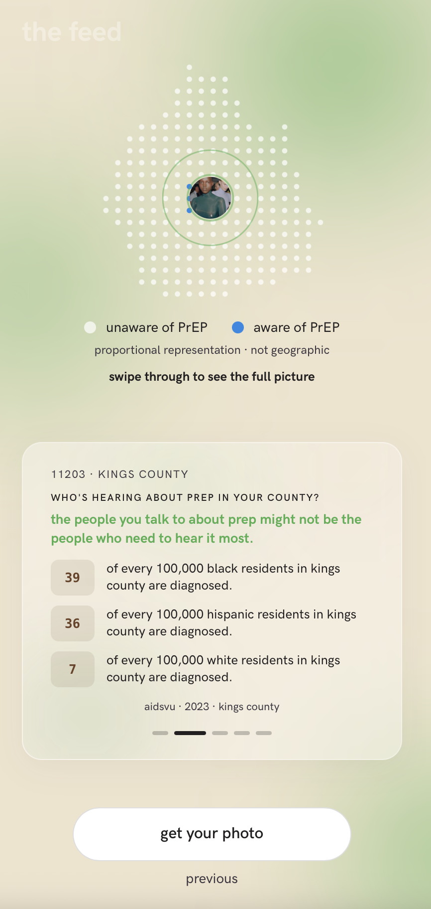
Summary: Second card in the five-card identity carousel. Displays new HIV diagnosis rates by race for the user's county (Kings County / Brooklyn), framing the awareness gap as a community-level observation. Uses "of every 100,000" format per language guidelines. Progress indicator shows 2 of 5.
User Action: Reads the breakdown by race. Swipes to next card.
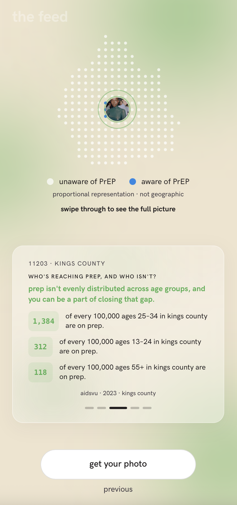
Summary: Third card in the five-card identity carousel. Displays PrEP coverage rates by age group for the user's county (Kings County). Uses "of every 100,000" format per language guidelines. Progress indicator shows 3 of 5.
User Action: Reads the breakdown by age group. Swipes to next card.
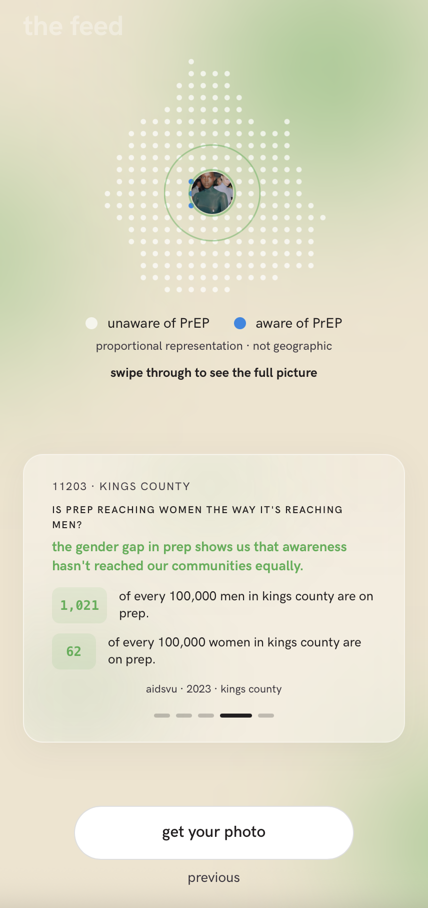
Summary: Fourth card in the five-card identity carousel. Displays PrEP coverage rates by gender for the user's county (Kings County). Uses "of every 100,000" format per language guidelines. Progress indicator shows 4 of 5.
User Action: Reads the breakdown by gender. Swipes to next card.
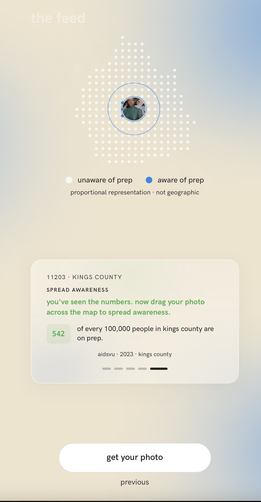
Summary: Fifth and final card in the identity carousel. Interactive drag element allows the user to "spread awareness" by dragging their photo across the map, which triggers dot color transitions from white (unaware) to blue (aware) on the persistent map above. Progress indicator shows 5 of 5. The "get your photo" button becomes enabled after the user completes the drag interaction.
User Action: Drags their photo dot across the county map visualization. White dots near the photo convert to blue. Once enough dots are converted, "get your photo" becomes tappable.
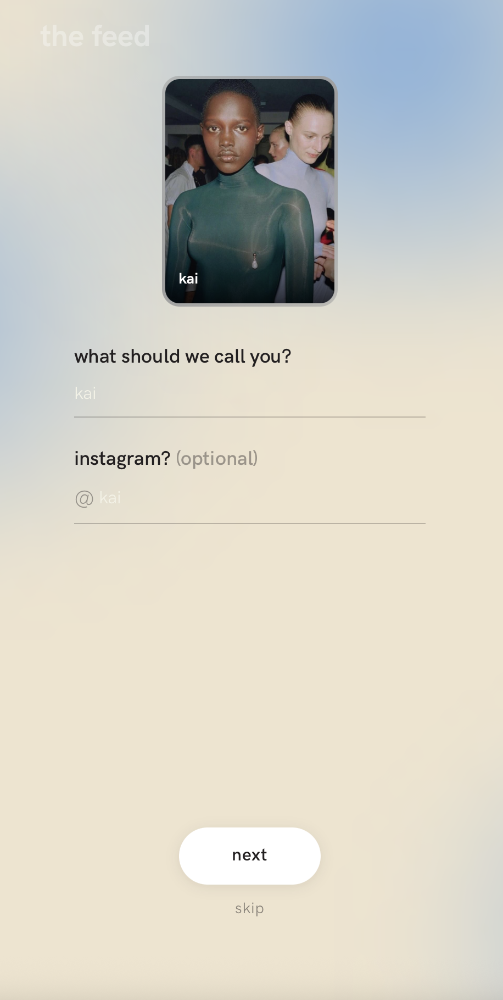
Summary: Collects the user's name and optional Instagram handle to personalize their identity card. The name appears on the generated card and, if the user opts in, on the shared feed display. A compact card preview updates in real-time as the user types.
User Action: Enters their name and optionally their Instagram handle. Taps "next" to continue or "skip" to proceed without a name.
Why this language is here: Name collection is for personalization of the identity card only. The name is not combined with PrEP answer data or zip code in any stored record. Session data is ephemeral.
Concerns this addresses:
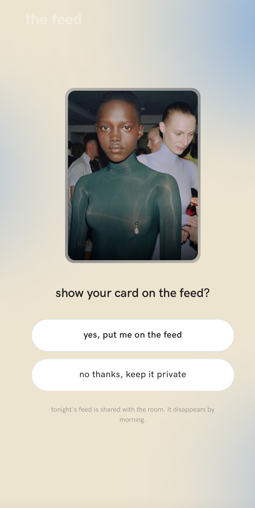
Summary: Asks the user whether they want their identity card to appear on the shared event feed, which is a projected display visible to other event attendees. The disclosure clearly states that the feed is shared with the room and disappears by morning. Both options (opt in, opt out) are visible with equal visual weight.
User Action: Selects to share their card to the feed or to keep it private. Both options are clearly presented.
Exact copy on screen: "tonight's feed is shared with the room. it disappears by morning."
Why this language is here: The disclosure sets clear expectations about the scope and duration of sharing. "Shared with the room" communicates that the card will be publicly visible at the event. "Disappears by morning" communicates the ephemeral nature of the display. The user can decline without consequence.
Concerns this addresses:
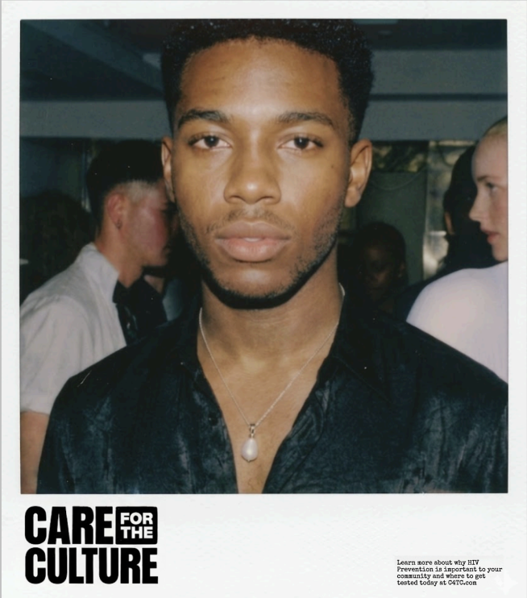
Summary: Physical printed photo card given to every user as a takeaway from the kiosk experience. The card is printed after the feed opt-in screen and before the phone number screen, ensuring every user receives their card regardless of whether they provide a phone number or join the feed. The card is the core deliverable of the experience.
User Action: Receives the printed card from the kiosk printer. No user input required on this step.
Exact copy on screen: No text on card. Blank polaroid format with user photo only.
Why this language is here: The card contains no text, branding, or PrEP-related language. This is a deliberate compliance decision: the photo card cannot link the user to their PrEP answer, HIV data, or any health-related content. The card is a neutral takeaway. Any future branding or text additions to the card would require a separate PRC submission.
Concerns this addresses:
Legal basis: HIV confidentiality statutes (jurisdiction-dependent). Photo tinting based on PrEP answer was removed per Gilead legal review (4/14 call) to prevent any visual linkage between the user's photo and their health-related response.
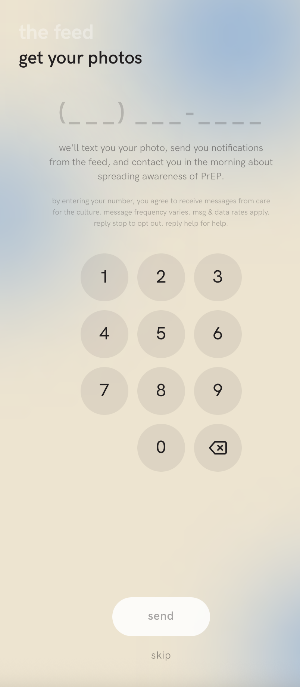
Summary: Collects the user's phone number to send them their personalized identity card via text message. The TCPA compliance language is visible on screen. The user can skip this step without providing a phone number.
User Action: Enters phone number via on-screen numpad or taps skip. TCPA consent language is visible before submission.
Why this language is here: TCPA (Telephone Consumer Protection Act) requires clear disclosure and consent before sending text messages. The on-screen language includes: message frequency varies, message and data rates may apply, reply STOP to opt out. This language is displayed before the user submits their number.
Stakeholder guidance that shaped this:
Concerns this addresses:
Legal basis: TCPA (Telephone Consumer Protection Act). 10DLC registration for SMS sending compliance.
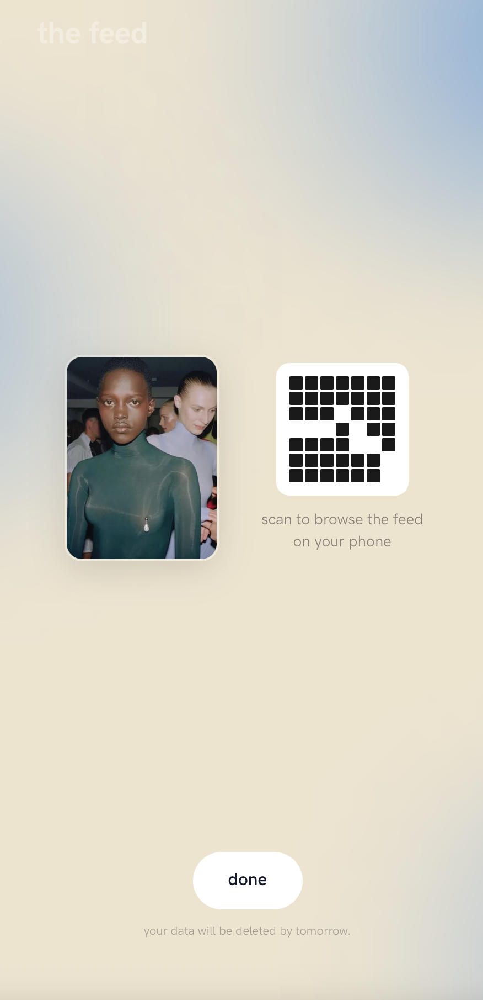
Summary: Final screen of the kiosk experience. Displays the user's card preview alongside a QR code for browsing the feed on a personal phone. The session concludes here and returns to the home screen attract loop after a 15-second timeout.
User Action: Scans the QR code to browse the feed on their phone. Taps "done" to return to home, or waits for auto-return. In group mode, shows "next person's turn!" with a "next" button.
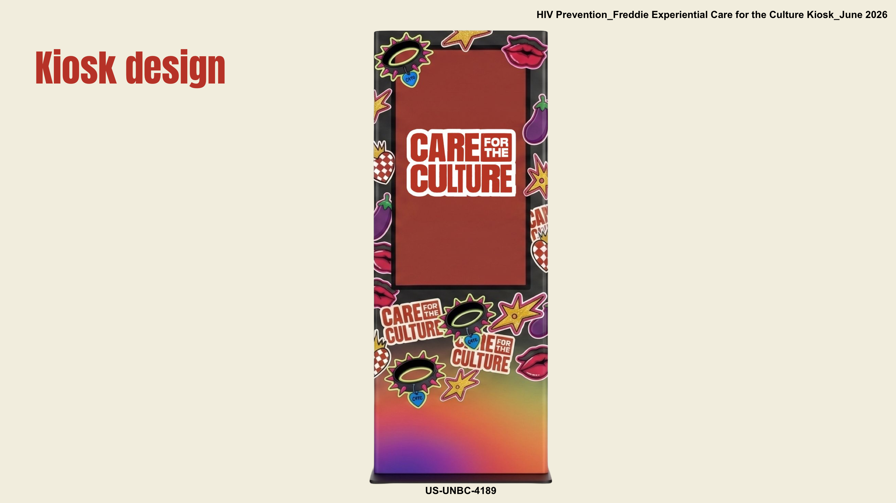
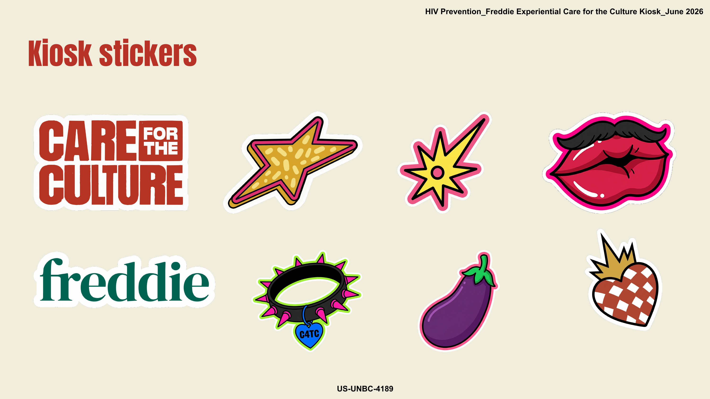